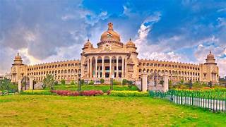
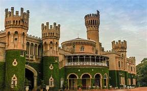
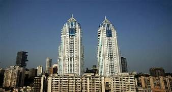

Bengaluru,[b] also known as Bangalore (its official name until 1 November 2014), is the capital and largest city of the southern Indian state of Karnataka. As per the 2011 census, the city had a population of 8.4 million, making it the third most populous city in India and the most populous in South India. The Bengaluru metropolitan area had a population of around 8.5 million, making it the fifth most populous urban agglomeration in the country. It is located towards the southern end of the Deccan Plateau, at an altitude of 900 m (3,000 ft) above sea level. The city is known as India's "Garden City", due to its parks and greenery.
Archaeological artefacts indicate that the human settlement in the region happened as early as 4000 BCE. The first mention of the name "Bengaluru" is from an old Kannada stone inscription from 890 CE found at the Nageshwara Temple in Begur. The region was ruled by the Western Ganga dynasty since 350 CE, and became part of the Chola Empire in the early eleventh century CE. In the late Middle Ages, it formed a part of the Hoysala kingdom and then the Vijayanagara Empire. In 1537 CE, Kempe Gowda I, a feudal ruler under the Vijayanagara Empire, established a mud fort which is considered the foundation of the modern city of Bengaluru with the earlier established areas (petes) still in existence. After the fall of the Vijayanagara Empire, Kempe Gowda declared independence, and the city was expanded by his successors. In 1638 CE, an Adil Shahi army defeated Kempe Gowda III, and the city became a jagir (feudal estate) of Shahaji. The Mughals later captured the city and sold it to Chikka Devaraja Wodeyar, the Maharaja of the Kingdom of Mysore. After the death of Krishnaraja Wodeyar II in 1759 CE, Hyder Ali seized control of the kingdom and with it, the administration of Bengaluru, which passed subsequently to his son, Tipu Sultan.